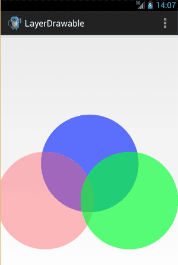

/* Моя кошка замечательно разбирается в программировании. Стоит мне объяснить проблему ей - и все становится ясно. */
John Robbins, Debugging Applications, Microsoft Press, 2000

/* Моя кошка замечательно разбирается в программировании. Стоит мне объяснить проблему ей - и все становится ясно. */
John Robbins, Debugging Applications, Microsoft Press, 2000
Класс Drawable
Класс BitmapDrawable
Класс ColorDrawable
Класс GradientDrawable
Класс TransitionDrawable
Класс ShapeDrawable
Класс RectShape
Класс OvalShape
Класс RoundRect
Класс Path
Класс ArcShape
ScaleDrawable
RotateDrawable
LayerDrawable
StateListDrawable
LevelListDrawable
Android предлагает двумерную графическую библиотеку рисования android.graphics.Drawable. Класс Drawable является базовым классом для всех классов работы с графикой. Это общая абстракция для рисуемого объекта. Класс Drawable определяет разнообразные виды графики, включая:
Для графики можно использовать объекты:
Есть два способа определить и инициализировать объект Drawable:
Самый простой способ добавить графику в приложение — это использование готовых изображений из ресурсов. Наиболее предпочтительный тип PNG, также можно использовать JPG (приемлемо) и GIF (нежелательно). Обычно таким способом загружают значки и картинки.
Ресурсы изображений, помещенные в каталог res/drawable/ во время компиляции проекта, могут быть автоматически оптимизированы со сжатием изображения утилитой aapt. Если требуется загружать растровые изображения BMP, которые утилита aapt обязательно оптимизирует, без сжатия, поместите их в каталог res/raw/, где они не будут оптимизироваться. Однако потребуется загрузка с использованием методов потокового ввода-вывода и последующая конвертация графики в растровый рисунок.
В других случаях вы можете захотеть обработать ваш ресурс изображения как объект Drawable. Чтобы это сделать, создайте Drawable, загрузив изображение из ресурсов примерно так:
Resources res = mContext.getResources(); Drawable myImage = res.getDrawable(R.drawable.my_image);
Каждый уникальный ресурс в вашем проекте может поддерживать только одно состояние независимо от того, сколько различных объектов вы можете инициализировать в программном коде для этого ресурса. Например, если вы инициализируете два объекта Drawable от одного ресурса изображения, а затем измените свойство, например alpha (прозрачность), для одного из объектов Drawable, другой объект также изменит это свойство.
Предположим, у нас в ресурсах есть картинка (Drawable). Нам нужно конвертировать её в объект Bitmap и вывести в ImageView:
ImageView targetImage;
@Override
public void onCreate(Bundle savedInstanceState) {
super.onCreate(savedInstanceState);
setContentView(R.layout.activity_main);
targetImage = (ImageView)findViewById(R.id.target);
// Загружаем растр из ресурсов
Bitmap srcBitmapLocal = BitmapFactory.decodeResource(
getApplicationContext().getResources(),
R.drawable.ic_launcher);
targetImage.setImageBitmap(srcBitmapLocal);
}
Аналогично, можно сконвертировать Bitmap в Drawable с помощью BitmapDrawable.
Drawable drawable = new BitmapDrawable(getResources(), tempBitmap);
Допустим, мы загружаем картинку (Bitmap) из Галереи и выводим его в ImageView
Возьмём готовый пример. Подготовим разметку.
<LinearLayout xmlns:android="http://schemas.android.com/apk/res/android"
xmlns:tools="http://schemas.android.com/tools"
android:layout_width="match_parent"
android:layout_height="match_parent"
android:orientation="vertical"
android:paddingBottom="@dimen/activity_vertical_margin"
android:paddingLeft="@dimen/activity_horizontal_margin"
android:paddingRight="@dimen/activity_horizontal_margin"
android:paddingTop="@dimen/activity_vertical_margin"
tools:context=".MainActivity" >
<Button
android:id="@+id/loadimage"
android:layout_width="match_parent"
android:layout_height="wrap_content"
android:text="Load Image 1" />
<TextView
android:id="@+id/sourceuri"
android:layout_width="match_parent"
android:layout_height="wrap_content" />
<ImageView
android:id="@+id/result"
android:layout_width="match_parent"
android:layout_height="wrap_content"
android:adjustViewBounds="true"
android:background="@android:color/background_dark"
android:scaleType="centerInside" />
</LinearLayout>
И код.
package ru.alexanderklimov.test;
import java.io.FileNotFoundException;
import android.net.Uri;
import android.os.Bundle;
import android.app.Activity;
import android.content.Intent;
import android.graphics.Bitmap;
import android.graphics.BitmapFactory;
import android.graphics.Canvas;
import android.graphics.drawable.BitmapDrawable;
import android.graphics.drawable.Drawable;
import android.view.View;
import android.view.View.OnClickListener;
import android.widget.Button;
import android.widget.ImageView;
import android.widget.TextView;
public class MainActivity extends Activity {
Button btnLoadImage;
TextView textSource;
ImageView imageResult;
final int RQS_IMAGE1 = 1;
Uri source;
Bitmap bitmapMaster;
Canvas canvasMaster;
@Override
protected void onCreate(Bundle savedInstanceState) {
super.onCreate(savedInstanceState);
setContentView(R.layout.activity_main);
btnLoadImage = (Button) findViewById(R.id.loadimage);
textSource = (TextView) findViewById(R.id.sourceuri);
imageResult = (ImageView) findViewById(R.id.result);
btnLoadImage.setOnClickListener(new OnClickListener() {
@Override
public void onClick(View arg0) {
Intent intent = new Intent(
Intent.ACTION_PICK,
android.provider.MediaStore.Images.Media.EXTERNAL_CONTENT_URI);
startActivityForResult(intent, RQS_IMAGE1);
}
});
}
@Override
protected void onActivityResult(int requestCode, int resultCode, Intent data) {
super.onActivityResult(requestCode, resultCode, data);
Bitmap tempBitmap;
if (resultCode == RESULT_OK) {
switch (requestCode) {
case RQS_IMAGE1:
source = data.getData();
try {
tempBitmap = BitmapFactory
.decodeStream(getContentResolver().openInputStream(
source));
// Convert bitmap to drawable
Drawable drawable = new BitmapDrawable(getResources(),
tempBitmap);
imageResult.setImageDrawable(drawable);
textSource.setText(drawable.getClass().toString());
} catch (FileNotFoundException e) {
// TODO Auto-generated catch block
e.printStackTrace();
}
break;
}
}
}
}
Класс ColorDrawable позволят указывать свойство изображения, основанное на единственном сплошном цвете. В качестве альтернативы можно использовать тег <color> в каталоге res/drawable:
<color xmlns:android="http://schemas.android.com/apk/res/android"
android:color="#FF0000" />
Класс GradientDrawable позволяет закрашивать градиентом кнопки, фон и так далее. Каждый градиент описывает плавный переход между двумя или тремя цветами с помощью линейного или радиального алгоритма, а также с помощью метода развёртки. В ресурсах GradientDrawable описывается в виде тега <gradient>, находясь внутри определения ресурса ShapeDrawable (<shape>).
Одна из возможностей использования объектов Drawable — загрузка картинок с плавными переходами. Создание переходов между изображениями с помощью класса TransitionDrawable лучше рассмотреть на примере. Добавим на форму элемент ImageView, в которую будут загружаться картинки:
<?xml version="1.0" encoding="utf-8"?>
<LinearLayout xmlns:android="http://schemas.android.com/apk/res/android"
android:orientation="vertical"
android:layout_width="fill_parent"
android:layout_height="fill_parent"
android:gravity="center">
<ImageView
android:id="@+id/image"
android:layout_width="wrap_content"
android:layout_height="wrap_content"
android:src="@drawable/photo1"/>
</LinearLayout>
В каталоге res/drawable/ проекта поместим два графических файла photol.jpg и photo2.jpg. В том же каталоге res/drawable/ создадим файл transition.xml, в котором определим переход.
<?xml version="1.0" encoding="utf-8"?>
<transition xmlns:android="http://schemas.android.com/apk/res/android">
<item android:drawable="@drawable/photo1"></item>
<item android:drawable="@drawable/photo2"></item>
</transition>
В классе активности создадим объект TransitionDrawable и установим его как содержание ImageView:
Resources res = this.getResources(); mTransition = (TransitionDrawable)res.getDrawable(R.drawable.transition);
Также создадим обработчик onCiick(), при вызове которого будет происходить смена картинок с плавным переходом в течение 1 секунды:
mTransition.startTransition(1000);
Полный код примера:
public class TransitionActivity extends Activity
implements OnClickListener {
private ImageView image;
private TransitionDrawable mTransition;
@Override
public void onCreate(Bundle savedInstanceState) {
super.onCreate(savedInstanceState);
setContentView(R.layout.main);
image = (ImageView)findViewById(R.id.image);
image.setOnClickListener(this);
Resources res = this.getResources();
mTransition = (TransitionDrawable)res.getDrawable(R.drawable.transition);
}
@Override
public void onClick(View v) {
image.setImageDrawable(mTransition);
mTransition.startTransition(1000);
}
}
Запустите проект. При касании экрана будет происходить плавное переключение от первого изображения к второму.
У примера есть один недостаток - при повторном касании произойдет резкая смена на первую картинку, которая снова будет плавно переключаться на вторую. Для обратной анимации от второй картинки к первой нужно задействовать метод reverseTransition():
int count = 2;
@Override
public void onClick(View v) {
image.setImageDrawable(mTransition);
if(count%2 == 0){
mTransition.startTransition(1000);
count++;
}
else{
mTransition.reverseTransition(1000);
count++;
}
}
Класс ShapeDrawable, входящий в пакет android.graphics.drawable, позволяет определять различные свойства рисунка с помощью различных методов, например setAlpha() — для установки прозрачности, setColorFilter() и т.д.
С объектами ShapeDrawable вы можете программно создавать любые примитивные формы и их стили. Для работы через XML используется тег <shape>. В библиотеке Android есть несколько классов, производных от базового класса Shape:
Для рисования прямоугольника используется класс RectShape. Также необходимо установить цвет и границы фигуры. Если вы не установите границы, то прямоугольник не будет рисоваться. Если вы не установите цвет, фигура будет черной (значение по умолчанию).
Если задать высоту или ширину в 1-2 пиксела, то можно получить не прямоугольник, а вертикальную или горизонтальную линию:
ShapeDrawable line = new ShapeDrawable(new RectShape());
line.setIntrinsicHeight(2);
line.setIntrinsicWidth(150);
line.getPaint().setColor(Color.MAGENTA);
Для рисования эллипсов используется класс OvalShape:
ShapeDrawable oval = new ShapeDrawable(new OvalShape());
oval.setIntrinsicHeight(100);
oval.setIntrinsicWidth(150);
oval.getPaint().setColor(Color.RED);
Прорисовка прямоугольника с закругленными сторонами (RoundRect) несколько сложнее. Конструктор класса RoundRect для рисования прямоугольника с закругленными сторонами принимает несколько параметров:
RoundRectShape(float[] outerRadii, RectF inset, float[] innerRadii)
float[] outR = new float[] {6, 6, 6, 6, 6, 6, 6, 6 };
RectF rectF = newRectF(8, 8, 8, 8);
float[] inR new float[] { 6, 6, 6, 6, 6, 6, 6, 6 };
ShapeDrawable shape = new ShapeDrawable(
new RoundRectShape(outR, rectF, inR));
shape.setIntrinsicHeight(120);
shape.setIntrinsicWidth(150);
shape.getPaint().setColor(Color.BLUE);
Класс Path формирует множественный контур геометрических путей, состоящих из прямых линейных сегментов, квадратичных и кубических кривых. Для установки точек и перемещения линий (или кривых) используются методы moveTo() и lineTo(). Например, с помощью класса Path можно нарисовать пятиконечную звезду:
Path p = new Path();
p.moveTo(50, 0);
p.lineTo(25, 100);
p.lineTo(100,50);
p.lineTo(0,50);
p.lineTo(75,100);
p.lineTo(50,0);
ShapeDrawable d = new ShapeDrawable(new PathShape(p, 100, 100));
d.setIntrinsicHeight(100);
d.setIntrinsicWidth(100);
d.getPaint().setColor(Color.YELLOW);
d.getPaint().setStyle(Paint.Style.STROKE);
Класс ArcShape создает фигуру в форме дуги. Принимает два параметра:угол начала прорисовки дуги в градусах и угловой размер дуги в градусах
ArcShape(float startAngle, float sweepAngle)
Класс ScaleDrawable используется для масштабирования.
Класс RotateDrawable используется для поворотов.
LayerDrawable позволяет накладывать объекты Drawable друг на друга. Создав массив из полупрозрачных картинок, вы можете наложить их один поверх другого. Подготовьте три полупрозрачных изображения круга (red.png, blue.png, green.png) и поместите их в ресурсы res/drawable. Создадим фон для макета при помощи наложения этих элементов.
// В onCreate()
LinearLayout linear = (LinearLayout)findViewById(R.id.linear);
linear.setBackground(createLayerDrawable());
private LayerDrawable createLayerDrawable() {
BitmapDrawable drawable0 = (BitmapDrawable) getResources().getDrawable(
R.drawable.blue);
drawable0.setGravity(Gravity.CENTER_VERTICAL);
BitmapDrawable drawable1 = (BitmapDrawable) getResources().getDrawable(
R.drawable.red);
drawable1.setGravity(Gravity.LEFT);
BitmapDrawable drawable2 = (BitmapDrawable) getResources().getDrawable(
R.drawable.green);
drawable2.setGravity(Gravity.RIGHT);
Drawable drawableArray[] = new Drawable[] { drawable0, drawable1, drawable2 };
LayerDrawable layerDraw = new LayerDrawable(drawableArray);
layerDraw.setLayerInset(1, -20, 300, 0, 0); // смещаем второй слой
layerDraw.setLayerInset(2, 100, 300, 0, 0); // смещаем третий слой
return layerDraw;
}

Также можно создать объекты LayerDrawable через XML с помощью тега layer-list.
У некоторых элементов управления есть некоторые состояния: нажато, выбрано и т.д.. В Android есть возможность задавать изображения для любого из таких состояний при помощи класса StateListDrawable. Но удобнее это делать через XML-ресурсы.
Используя LevelListDrawable, вы можете эффективно размещать ресурсы Drawable один поверх другого, указывая целочисленный индекс для каждого слоя. Пример с использованием XML.
Звёзды из котов - создаём собственный Drawable